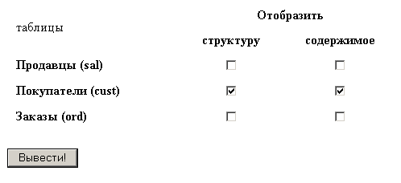
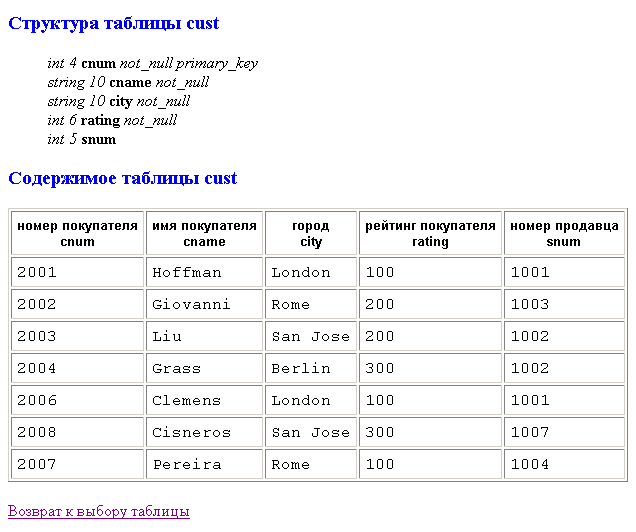
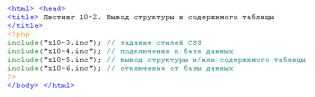

Создайте файл z10-1.htm с HTML-формой, позволяющей выбрать
а) структуру (группа флажков "structure") и/или
б) содержимое (группа флажков "content")
любой таблицы (или нескольких таблиц) базы данных study:

При нажатии кнопки "Вывести" должен вызываться скрипт z10-2.php (для передачи названий таблиц используйте метод GET):

Скрипт z10-2.php должен быть составным, т.е. иметь вид:

Именно таким образом и происходит отделение оформления страниц сайта от обращения
к СУБД и от собственно наполнения (контента) каждой страницы.
Особенно важно, чтобы для инициализации обращения к базе данных
был один единственный inc-файл! Тогда, чтобы заменить логин и пароль доступа к БД (например,
при смене провайдера сайта), достаточно исправить всего один файл.
В файле z10-3.inc содержится раздел <style>, в котором заданы CSS-стили для:
и команды </head> <body>
В файле z10-4.inc содержатся php-команды для подключение к базе данных study.
В файле z10-5.inc содержатся функции vid_structure() и
vid_content() для отображения структуры и содержимого таблицы, выбранной в
HTML-форме (имя таблицы является аргументом функций).
Перед вызовом функций обязательно проверять, заданы ли значения для переменных
$structure и $content.
Функция vid_structure() отображает структуру выбранной таблицы (использовать листинг 11-6).
Функция vid_content() отображает содержимое выбранной таблицы, причем в первой строке таблицы, в каждой ячейке <th> сперва указаны русские названия для столбцов таблицы, а через <br> — собственно имена столбцов. Для этого в функции создайте ассоциативный массив $rus_name[], в котором ключами будут имена столбцов, а значениями ключей — русские названия этих столбцов (массив должен быть единый для всех 3 таблиц).
В заголовках <h4> ("Структура таблицы …" и "Содержимое таблицы …") должно подставляться название выбранной таблицы.
В конце файла z10-5.inc поставьте гиперссылку на z10-1.htm ("Возврат к выбору таблицы").
В файле z10-6.inc содержится php-команда для отключения от базы данных.